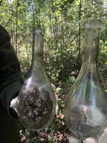

UTC / СЕЙЧАС00:00:00 UTCВремя обновляется каждую секунду.
EDUCATION / FIELD NOTES / OPEN DATA
Ищем интересное
в том, что другие считают мусором.
Интерактивная образовательная лаборатория: реальные места, научные публикации, открытые данные и задания, которые учат не запоминать факты, а проверять их.
Научные публикацииОткрытые данныеПолевые наблюдения

LIVE / NOAA
Планета сейчас
Скорость солнечного ветра и компонент Bz берутся из оперативных 1-минутных рядов NOAA. Если источник не отдаёт корректное значение, соответствующая карточка скрывается — сайт не показывает заглушки и не придумывает данные.
01 / FIELD CASE
Ямал: лёд, метан и люди
Мерзлота, метан и влияние оленеводства — через реальные исследования западного Ямала.
02 / METHOD
Факт, гипотеза или миф?
Учимся читать единицы измерения, период, методику и границы научного вывода.
03 / CHALLENGE
7 дней наблюдений
Небольшие задания превращают экологию из темы урока в практику исследования.
LIBRARY / FIELD SCHOOL
Лекции, которые начинаются
с места, а не с определения.
Каждая тема содержит объяснение, научную логику, практическое задание и проверяемый источник.
QUIZ / 30 QUESTIONS
Викторина без угадывания.
В каждом уровне минимум 10 вопросов. Можно выбрать сложность и тему, а после ответа увидеть объяснение.
FIELD LAB / 03
Эко-детектив
Отделяй наблюдение от гипотезы, а гипотезу — от доказательства.
MY FIELD LOG
Твой прогресс — это след исследования.
Данные сохраняются только в браузере. Нет аккаунта, рекламы, профилей и передачи персональных данных.